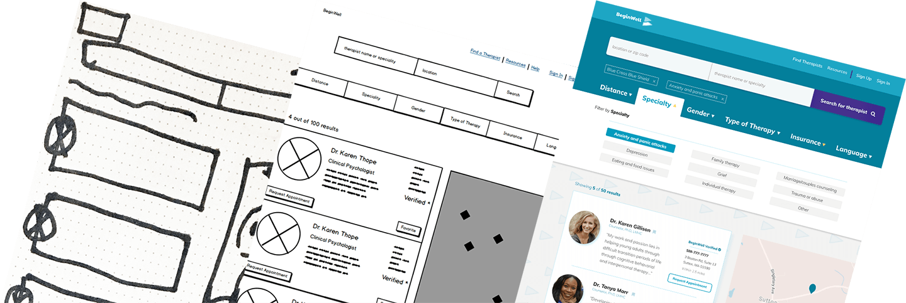
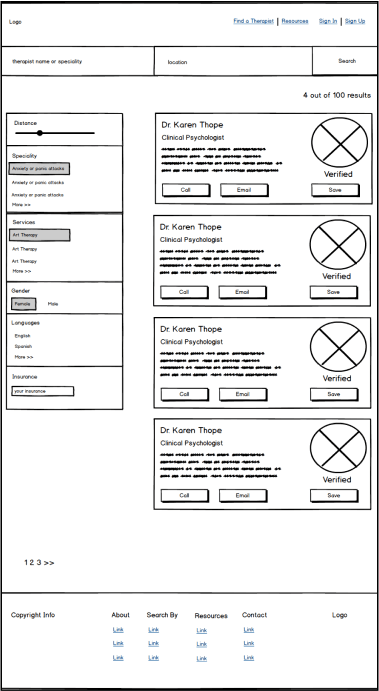
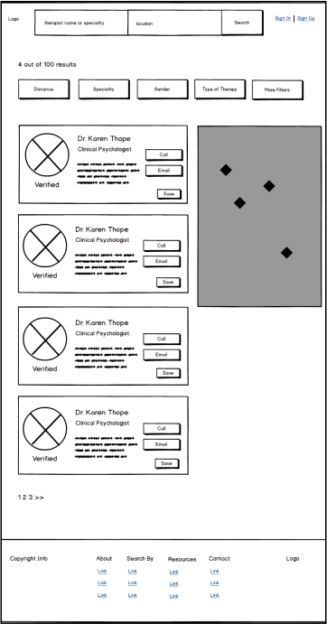
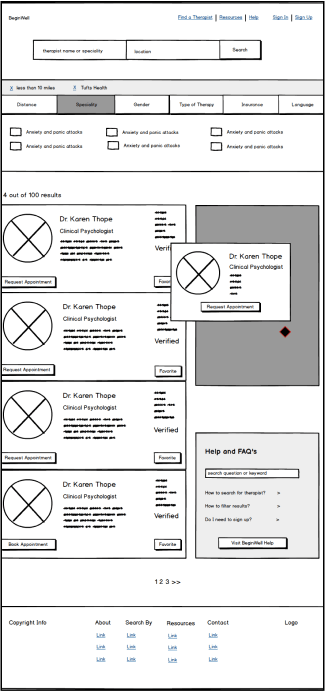
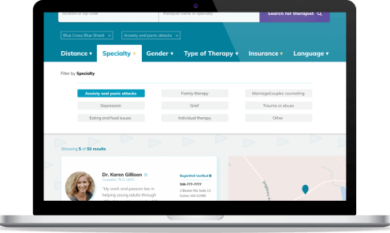

BeginWell
BeginWell helps users find a local therapist. With information accessible in one place, users can search and filter by various options and find the right therapist for their needs.
Solve an everyday problem with a digital solution.
RolePersonal project – research, wireframe, design, prototype, and validate.
TimelineOctober 2017 – December 2017
ToolsFigma, Illustrator, Sketch, Balsamiq, InVision, Google Forms, Usability Hub
Why is it so difficult to find consise and clear information about a therapist?
The process for finding a therapist often requires multiple methods of searching, dealing with an overload of information, and takes too much time. It can become a deterrant for those seeking mental health services, myself included.
Provide the information individuals need to find a therapist in one place.
BeginWell is a website focused on finding a local therapist for individuals looking for the first time or starting the process again. By providing all the information in one place, the process to find a therapist becomes familiar and trustworthy to the user.
01. Discovery
To begin solving the problem of finding a therapist, I first had to discover if the difficulty of finding a therapist was a problem that exists among young adults, and collect information from potential users. Though it was easy to relate to my personal experiences, I am not every user and I needed to keep an unbiased focus throughout the project.
01.01 / User Survey
I conducted a survey with 33 participants with the goals to discover if young adults are seeking therapists now or will in the future, their current process to access information, their frustrations, if any, in the process, and their decision making process for contacting a therapist.
Frustrations ranged from starting the process to tracking down information.
- Users go to different places to find information.
- 54% did not know where to start.
Trusting a therapist starts with learning more about the therapist and the services they offer.
- Background + personal statement = trust
- For 97%, type of therapy is important.
01.02 / User Personas
With survey results in hand, I conducted follow up interviews with 3 participants to learn more about their experiences. As a result, the personas created representational users that would inform my design decisions later in the process.
“After a few years of hesitation, I’ve decided to look for a therapist for the first time. Now… where to start?”
01.03 / Competitive Analysis
Analyzing Goodhealth.org, which offers mental health services, and sites that focus on broader medical services like ZocDoc and Healthgrades, revealed an opportunity in the field for a site that not only focuses on finding a therapist, but also offers a user-friendly search and filter design.
Expanding my research to non-related sites and focusing on their design patterns was a big breakthrough. Specifically, focusing on the filtering design patterns of sites like Yelp and Airbnb helped me rationalize my later design decisions and challenged my thinking of would be most beneficial to my potential users.
02. Define
At this point, the search showed there is a space available to help individuals search and filter for a therapist, while also helping them learn about a therapist and start to develop trust. Working through user stories and user flows pulled my focus back to these core ideas.
02.01 / User Stories
Working on the user stories highlighted the challenge that I needed to define the scope of the solution. Defining the user stories that focused on an MVP of a solution helped me realize a user needs to be able to search for a therapist, filter their results, learn about a therapist, and have the information available to contact the therapist if they choose. Prioritizing theses core actions defined the scope that I needed.
High priority (MVP)
- As a user, I want to search for a therapist
- As a user, I want to filter the search results
- As a user, I want to see a therapist's background
- As a user, I want to see reviews left by patients
- As a user, I want to see a therapist's location and distance from me
- As a user, I want help requesting an appointment
- As a user, I want to learn more about the site and how it can help me
- As a user, I want verified information that I can trust
- As a user, I want to view my search results
- As a user, I want to leave a review about a therapist
- As a user, I want to see the types of therapy and services a therapist offers
Future development
- As a user, I want to request reviews about a therapist
- As a user, I want to save recommendation requests to my account
- As a user, I want to request a specific appointment date/time
- As a user, I want to receive an appointment request confirmation
- As a user, I want to request to see how much an appointment will cost
02.02 / User Flows
It was important to work through the user flows to understand how a user could accomplish the prioritized user stories. To reinforce the idea of the site being “familiar” to users, I wanted to keep the actions simple and intuitive.
03. Ideate
One of the biggest learning points throughout this project happened when I started sketching and working on wireframes. This process reinforced that the first idea is not the best idea. Taking the time to work on different iterations and evaluate each reinenforced how important this workflow is to my design process.
03.01 / Pen and Paper
Starting out with pen and paper sketches meant I could work through different layouts and concepts quickly to try different ideas, rather than only focusing on the pixel-specifics of the designs.
03.02 / Low-Fi Wireframes
After evaluating the sketches, I translated the most promising into low-fidelity wireframes and began more iterations of the designs. Specifically, the search results page and filtering pattern went through more iterations trying to work out how the filter could be incorporated in the page that made sense to the user and functioned as a user would expect.
Left panel filter
Draws too much attention from results
Floating tab filter
Inconsistent and unclear function
Horizontal tab filter
Intuitive to use and balanced with page
03.03 / Testing Wireframes
Conducting user tests on the wireframes was a good way to gauge the functionality of the design, without focusing on the visual design. The mix of online UserTests and in-person testing revealed some lapses in the layout design. The CTA buttons were getting lost on the search results page, which resulted in another iteration to clarify the CTA hierarchy.
04. Design
With a grasp on the functionality of the site in place, tackling the visual identity of the site started with finding a name. Using a similar process of research and prototyping iterations helped me wrap my head around creating BeginWell’s brand, which then informed the visual design for the high-fidelity mockups.
04.01 / Early Sketches
Using visual exercises and creating a mind map helped me narrow down my ideas for a name that captured the idea of starting something new and beginning a new mental health journey. Through this process, I started zeroing on words like "begin", "journey", "heal", and "well". After some more rounds of brainstorming, BeginWell was finalized as the name and used in logo sketches.
04.02 / Style Guide
The final logo was created with hand-drawn inspired flags that also resemble the letters B and W. The hand-drawn inspiration also reflects the idea that like ourselves, not everything needs to be “perfect”. Using the typeface Paytone One evoked a similar sense of motion as the flags, while offering a uniqueness that I thought the wordmark needed. Muli was chosen as the typeface for all body content, as it offered the range of styles needed to created hierarchy, and played to similar curves and x-height as Paytone One.
The color palette was influenced by a photo of flags, with a teal-blue chosen as the primary brand color to capture the sense of trustworthiness. The purple call to action offered a strong contrast to different shades of the primary color, while the yellow created an accent of light symbolic to the process of finding a therapist.
04.03 / Mockups
The process of creating mockups for BeginWell focused on using the visual design elements to create contrast and draw attention to parts of the site that the users from previous testing noted as most important. Using the research already in hand to create visual hierarchy kept me focused on the users' needs.
The contrast of splitting two sections with the search bar makes it easy to find without overwhelming the rest of elements on the page.
The filter design was the most challenging to design. Once click-activated, the filters dropdown into a tabbed bar, which helps the user focus on the filter options while not distracting the user from viewing the results.
05. Validate
It’s easy to fall in love with what you design, but testing throughout the process was crucial for me to remain unbiased. With the mockups created, I was able to test users’ preferences and the functionality of the design. The findings from both tests informed the final clickable prototype and provided a baseline for future development.
05.01 / Homepage A/B Testing
While working on the mockups for the homepage, I started working on two different versions with different visual themes. In order to decide which direction to go in, I created an A/B test of both versions and sent it out to my design community and group of BeginWell testers.
05.02 / Prototype User Test
The final user testing conducted was a mix between in-person testing and participants from UserTests, using the final clickable prototype. The focus on the prototype testing was to observe users completing a series of tasks to highlight any areas of confusion or actions that were not intuitive to complete. Overall, the testing was very positive and all 6 users were able to complete the tasks and commented on the easy-to-use functions, like the filter bar. The testing also reinforced the user stories for future development. Multiple testers commented on booking an appointment with a therapist and that they would like to see specific dates and times avialable within the site. Researching and designing an appointment system will be an interesting challenge in the future.
06. Final Thoughts
This project was personal and important to me, not only as a designer but because of the impact it could have on how we look and interact with mental health services. Mental health is a complex topic, but taking the time to get to know potential users, not just basing decisions on my experience, was crucial in developing a solution that would work for users. With a site that makes finding a therapist accessible and easy to do, it could mean one more person could find the services they need to get help without feeling the stress of the process or the stigma that still exists surrounding mental health.
Challenging myself to create and recreate wireframes helped me expand my understanding of how design decisions impact usability and evaluating designs based on that, rather than personal preference. In the future, I would like to expand BeginWell to include functions like booking appointments directly through the site and tackle how therapists interact with the site.
Check out my other work too.
Keep it together.
Keepsy
Customize project prompt to challenge my design and development skills.
Design, Development